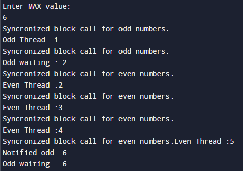

Write a Java program that creates two threads to find and print even and odd numbers from 1 to 20.
Code:-
// import required classes and package if any
import java.util.Scanner;
// create class PrintEvenOddExample1 to print even and odd numbers using two threads
public class PrintEvenOddExample1 {
// create a boolean variable odd for even and odd numbers
boolean odd;
int counter = 1; // set initial counter to 1
int MAX;
// create printOddNumbers() method to print odd numbers
public void printOddNumbers() {
// synchronized block for odd numbers
synchronized (this) {
while (counter < MAX) {
System.out.println("Syncronized block call for odd numbers.");
while (!odd) { // use wait and notify technique within while loop
// call wait() method within try-catch block for
try {
// print odd that is waiting
System.out.println("Odd waiting : " + counter);
// call wait() method
wait();
//print odd that is notified
System.out.println("Notified odd :" + counter);
} catch (InterruptedException e) {
// handle exceptions
e.printStackTrace();
}
}
// print odd thread
System.out.println("Odd Thread :" + counter);
// increment counter variable
counter++;
// set boolean odd to false
odd = false;
// call notify()
notify();
}
}
}
// create printEvenNumbers() method to print even numbers
public void printEvenNumbers() {
// use try-catch block to sleep thread
try {
// stop thread for a specific time
Thread.sleep(1000);
} catch (InterruptedException e1) {
e1.printStackTrace();
}
// synchronized block for odd numbers
synchronized (this) {
while (counter < MAX) {
System.out.println("Syncronized block call for even numbers.");
while (odd) { // use wait and notify technique within while loop
// call wait() method within try-catch block for
try {
// print odd that is waiting
System.out.println("Even waiting : " + counter);
// call wait() method
wait();
//print even that is notified
System.out.println("Notified even :" + counter);
} catch (InterruptedException e) {
// handle exceptions
e.printStackTrace();
}
}
// print odd thread
System.out.println("Even Thread :" + counter);
// increment counter variable
counter++;
// set boolean odd to false
odd = false;
// call notify()
notify();
}
}
}
// main() method start
public static void main(String[] args) {
// create an instance of PrintEvenOddExample1
final PrintEvenOddExample1 obj = new PrintEvenOddExample1();
// set boolean odd to true
obj.odd = true;
// create an instance of Scanner class
Scanner sc = new Scanner(System.in);
System.out.println("Enter MAX value:");
obj.MAX = sc.nextInt();
// close scanner class instance
sc.close();
// create thread1 to print even numbers
Thread thread1 = new Thread(new Runnable() {
// override run() method
@Override
public void run() {
obj.printEvenNumbers();
}
});
// create thread2 to print odd numbers
Thread thread2 = new Thread(new Runnable() {
// override run() method
@Override
public void run() {
obj.printOddNumbers();
}
});
// start thread1 and thread2
thread1.start();
thread2.start();
// call join() method within try-catch block
try {
thread1.join();
thread2.join();
} catch (InterruptedException e) {
// handle exception
e.printStackTrace();
}
}
}
Output:-
